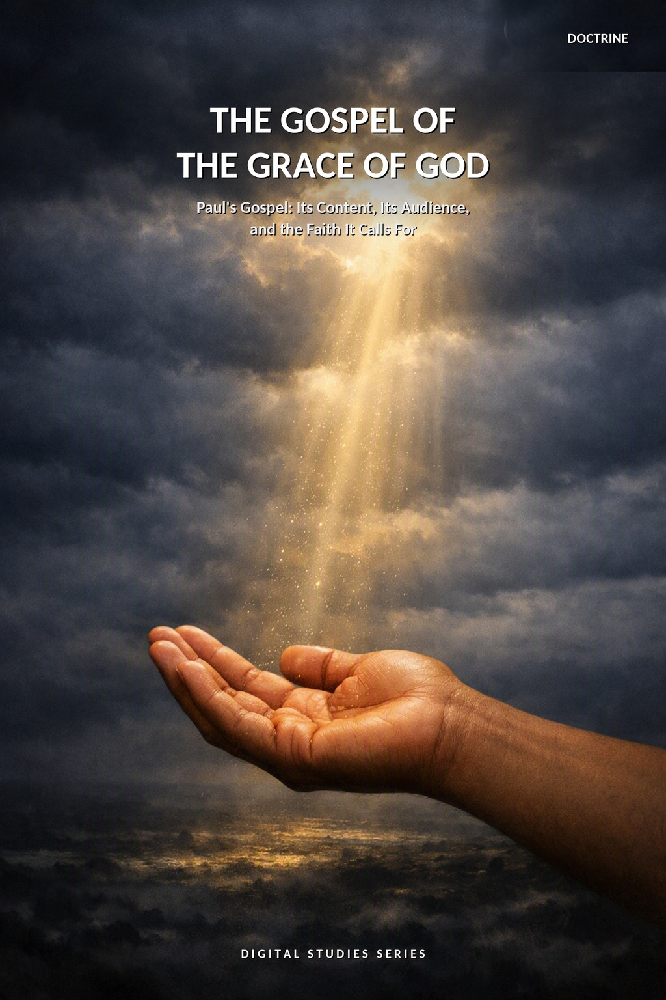
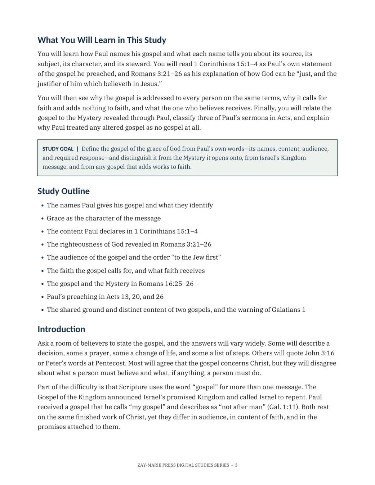
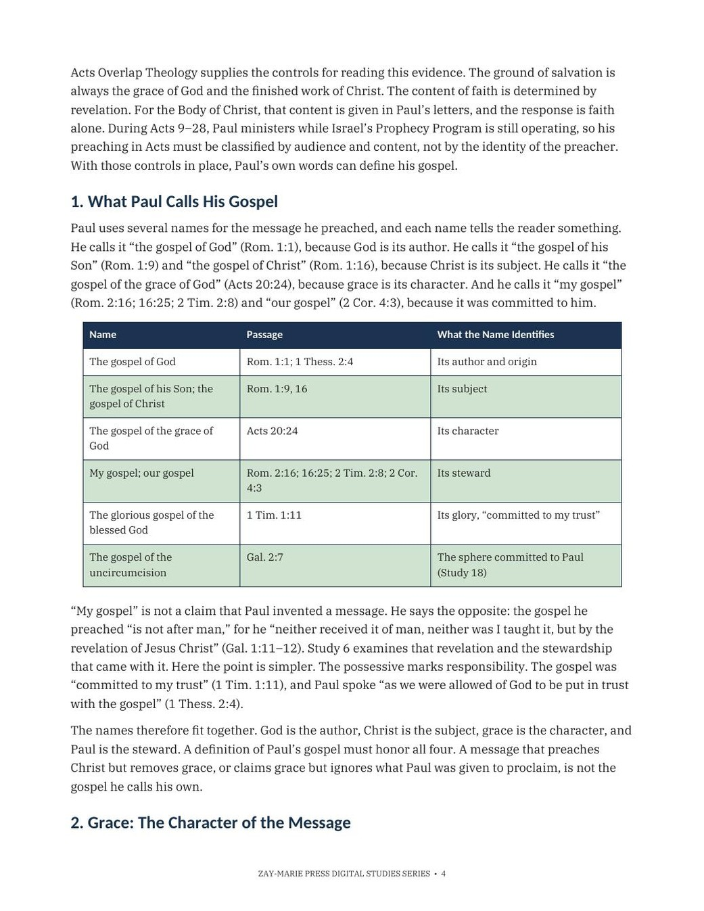
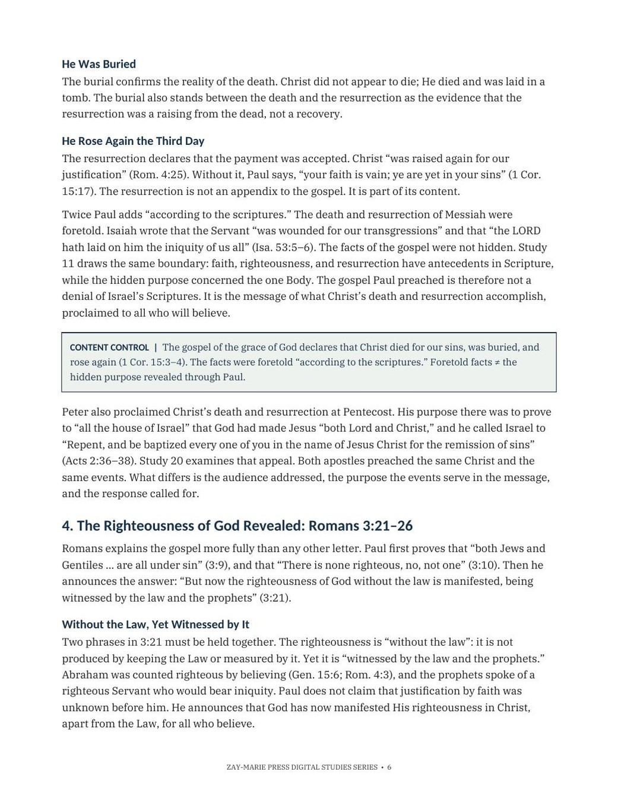
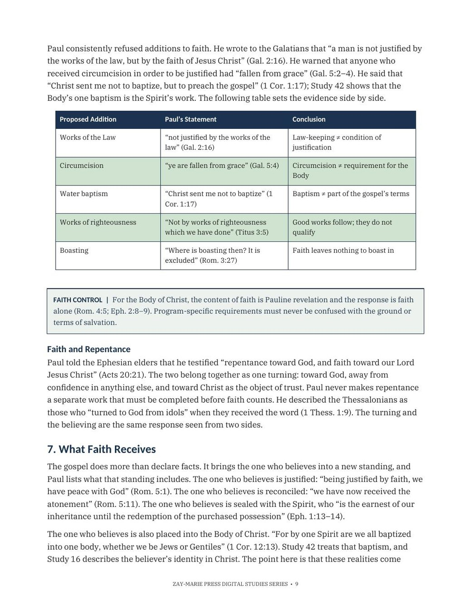

The Gospel of the Grace of God
Paul’s Gospel: Its Content, Its Audience, and the Faith It Calls For
A Biblical Definition of Paul’s Gospel — Its Names, Its Content, Its Audience, and the Faith It Calls For
Paul described his whole ministry in one phrase. He told the elders of Ephesus that he counted nothing dear to himself so that he might finish “the ministry, which I have received of the Lord Jesus, to testify the gospel of the grace of God” (Acts 20:24). Many readers use the word “gospel” for any presentation of Christ. Paul used it with precision. He spoke of “my gospel,” warned against “another gospel,” and pronounced a curse on anyone who changed it.
This study asks what that gospel is: what Paul calls it, what it declares, to whom it is addressed, what response it calls for, and how it relates to the Mystery revealed through him. It does not repeat the full comparison with the Gospel of the Kingdom, which Study 2 examines, or the argument of James 2, which Study 15 treats.
One Gospel, Defined With Precision
Paul spoke of his gospel with exact language: its names, its content, its audience, and the response it calls for. Reading those distinctions in order removes the vagueness that lets “gospel” mean whatever a reader assumes.
This study follows Paul’s own words rather than a general definition. It states what he calls the message, what 1 Corinthians 15:1–4 declares as its content, how Romans 3:21–26 explains the righteousness it reveals, and why he treated any addition to faith as grounds for a curse.
How These Studies Relate
Study 43 defines the gospel Paul preached for the Body of Christ — its names, its content, its audience, and the faith it calls for.
Study 2 — The Gospel of the Kingdom Read the Kingdom message Israel was called to believe; this study distinguishes it from Paul’s gospel without merging their shared ground in Christ’s finished work.
Study 6 — The Mystery Revealed Through Paul Examine the previously hidden truth Paul was given to reveal; this study relates that Mystery to the gospel he preached without collapsing the two.
Study 11 — The Beginning of the Body of Christ Ask when the Body began; this study identifies the gospel by which its members are justified, reconciled, and placed into that Body.
Define the Gospel From Paul’s Own Words
The Names Paul Gives It
See what “the gospel of God,” “the gospel of Christ,” “the gospel of the grace of God,” and “my gospel” each identify.
Grace as Its Character
Define grace by contrast with debt, and see why it excludes every earned addition.
Its Content: 1 Corinthians 15
State the three facts Paul names as of first importance: died, buried, rose again.
Its Ground: Romans 3:21–26
See how God is both just and the justifier through the propitiation in Christ’s blood.
Its Audience and Its Faith
Read why the gospel is addressed to all on the same terms, and what faith alone receives.
The Gospel and the Mystery
Relate the gospel to the Mystery revealed through Paul without merging the two.
Examine the Passages for Yourself
Acts 20:24
Paul names the message he counted his whole ministry to testify: “the gospel of the grace of God.”
1 Corinthians 15:3–4
Christ died, was buried, and rose again “according to the scriptures” — the gospel’s content stated in three clauses.
Romans 3:21–26
The righteousness of God is manifested, so that He is both just and the justifier of the one who believes.
Romans 1:16
“To the Jew first, and also to the Greek” — the gospel’s audience and the order of its address.
Romans 4:5
“To him that worketh not, but believeth” — faith alone, without works, counted for righteousness.
Ephesians 1:13–14
The one who believes is sealed with the Holy Spirit, the earnest of the inheritance.
Romans 16:25–26
The gospel opens onto “the revelation of the mystery” made known through Paul.
Galatians 1:6–9
Paul’s warning against preaching “another gospel” to the churches of Galatia.
Foretold, Yet Hidden
“Foretold facts ≠ the hidden purpose revealed through Paul.”
The gospel’s content was written beforehand in the Law and the Prophets. The Mystery Paul was given to reveal is a distinct truth built on that same finished work — related, but never merged.
Preview the Study Before You Purchase
Click any page to enlarge it for reading.
{kind=link}

What You Will Learn
See the study’s goal, outline, and the question it sets out to answer.
{kind=link}

The Names of the Gospel
Compare the six names Paul gives his gospel and what each one identifies.
{kind=link}

The Righteousness of God
Read how Romans 3:21–26 declares God both just and the justifier.
{kind=link}

Guarding the Faith
See the table testing common additions to faith against Paul’s own words.
A Focused Study Built for
Understanding and Teaching
16-Page In-Depth Biblical Study
A careful definition of the gospel Paul preached for the Body of Christ.
11 Core Teaching Sections
Progress from the gospel’s names through its content, ground, audience, and its relation to the Mystery.
Two Reference Tables
Compare the names of the gospel and test common additions to faith against Paul’s own words.
16 Review Questions
Test the study’s distinctions concerning content, audience, faith, and the Mystery.
Teaching Outline
A ready ten-point framework for teaching the gospel of the grace of God with precision.
Guided Further Study
Return to the gospel’s names, its content, its audience, and the Mystery with directed questions.
Scripture-Tracing Exercise
Trace the gospel’s key terms across Paul’s letters in their own context.
Final Synthesis Exercise
Bring the evidence together in one coherent, Scripture-based explanation.
The Gospel of the Grace of God
17-page digital PDF · For personal use
Want More Than a Focused Study?
Digital Studies examine particular biblical subjects and difficult passages. The 40-lesson Biblical Hermeneutics course teaches a complete, repeatable method for establishing meaning in context, determining proper assignment, and making responsible application.